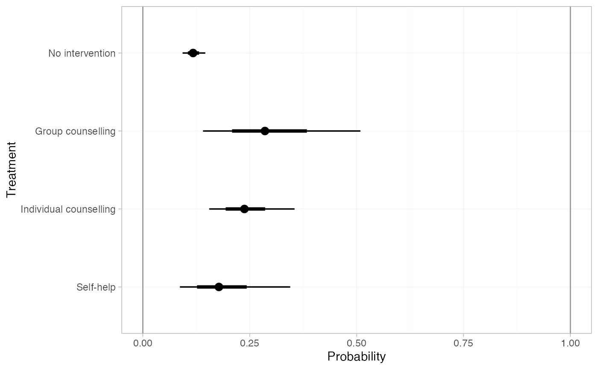
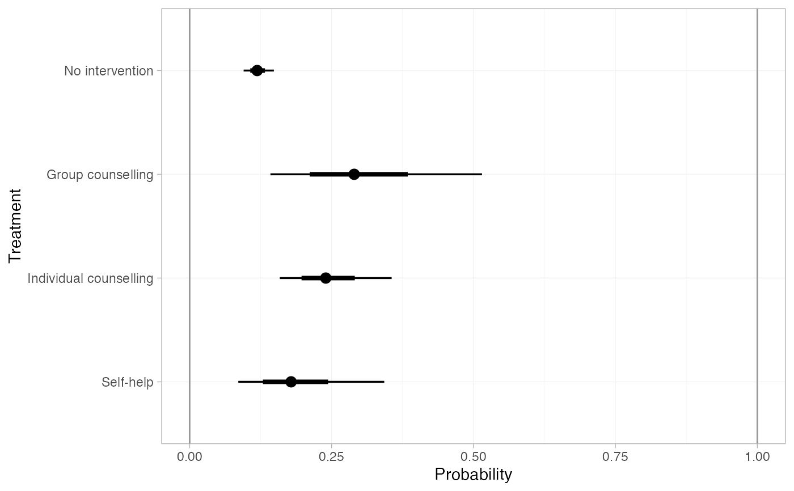
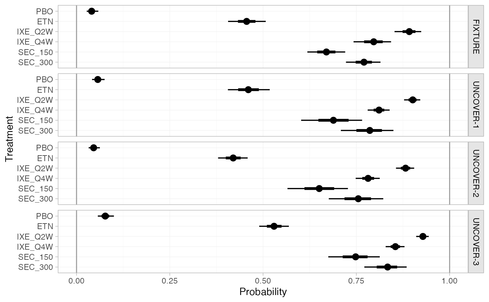
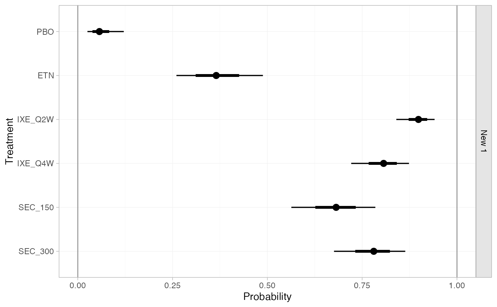
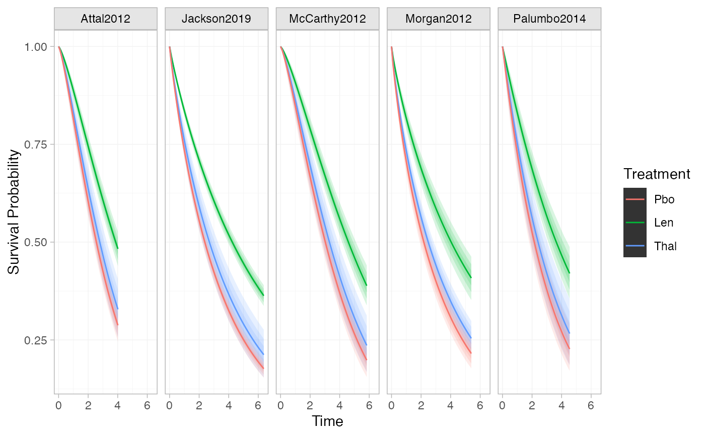
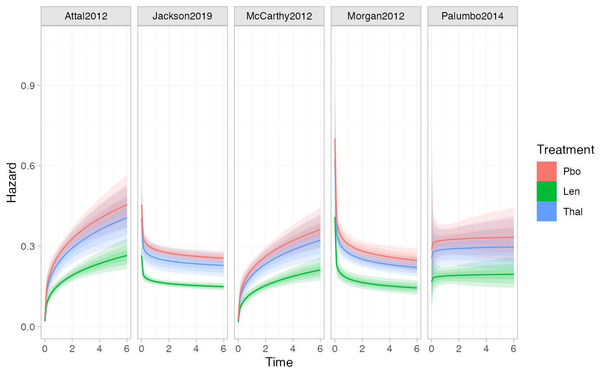
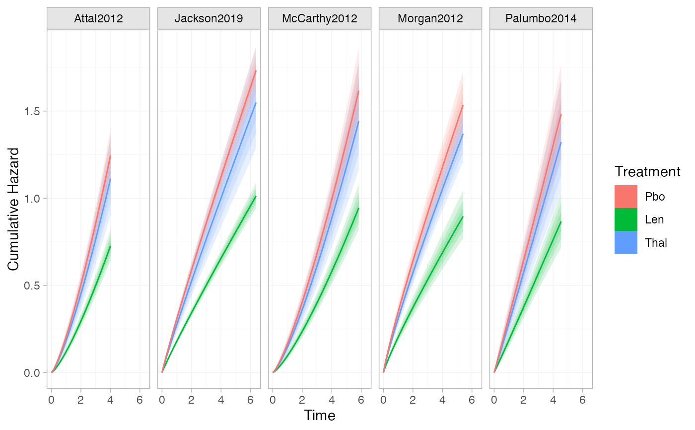
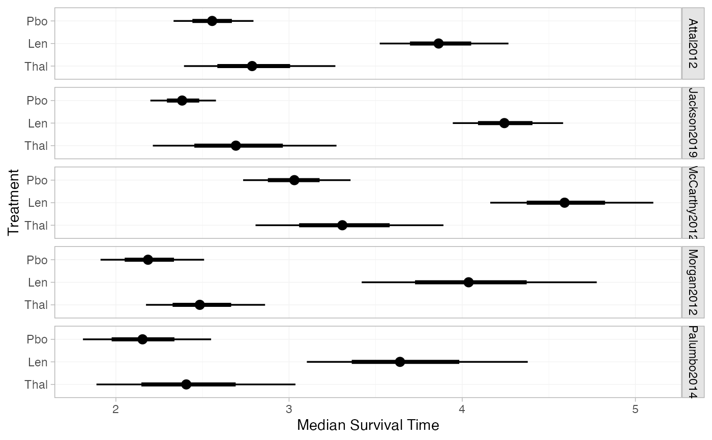

Obtain predictions of absolute effects from NMA models fitted with nma().
For example, if a model is fitted to binary data with a logit link, predicted
outcome probabilities or log odds can be produced. For survival models,
predictions can be made for survival probabilities, (cumulative) hazards,
(restricted) mean survival times, and quantiles including median survival
times.
When an IPD NMA or ML-NMR model has been fitted, predictions can be
produced either at an individual level or at an aggregate level.
Aggregate-level predictions are population-average absolute effects; these
are marginalised or standardised over a population. For example, average
event probabilities from a logistic regression, or marginal (standardised)
survival probabilities from a survival model.
Usage
# S3 method for class 'stan_nma'
predict(
object,
...,
baseline = NULL,
newdata = NULL,
study = NULL,
type = c("link", "response"),
level = c("aggregate", "individual"),
baseline_trt = NULL,
baseline_type = c("link", "response"),
baseline_level = c("individual", "aggregate"),
probs = c(0.025, 0.25, 0.5, 0.75, 0.975),
predictive_distribution = FALSE,
summary = TRUE,
progress = FALSE,
trt_ref = NULL
)
# S3 method for class 'stan_nma_surv'
predict(
object,
times = NULL,
...,
baseline_trt = NULL,
baseline = NULL,
aux = NULL,
newdata = NULL,
study = NULL,
type = c("survival", "hazard", "cumhaz", "mean", "median", "quantile", "rmst", "link"),
quantiles = c(0.25, 0.5, 0.75),
level = c("aggregate", "individual"),
times_seq = NULL,
probs = c(0.025, 0.25, 0.5, 0.75, 0.975),
predictive_distribution = FALSE,
summary = TRUE,
progress = interactive(),
trt_ref = NULL
)Arguments
- object
A
stan_nmaobject created bynma().- ...
Additional arguments, passed to
uniroot()for regression models ifbaseline_level = "aggregate".- baseline
An optional
distr()distribution for the baseline response (i.e. intercept), about which to produce absolute effects. Can also be a character string naming a study in the network to take the estimated baseline response distribution from. IfNULL, predictions are produced using the baseline response for each study in the network with IPD or arm-based AgD.For regression models, this may be a list of
distr()distributions (or study names in the network to use the baseline distributions from) of the same length as the number of studies innewdata, possibly named by the studies innewdataor otherwise in order of appearance innewdata.Use the
baseline_typeandbaseline_levelarguments to specify whether this distribution is on the response or linear predictor scale, and (for ML-NMR or models including IPD) whether this applies to an individual at the reference level of the covariates or over the entirenewdatapopulation, respectively. For example, in a model with a logit link withbaseline_type = "link", this would be a distribution for the baseline log odds of an event. For survival models,baselinealways corresponds to the intercept parameters in the linear predictor (i.e.baseline_typeis always"link", andbaseline_levelis"individual"for IPD NMA or ML-NMR, and"aggregate"for AgD NMA).Use the
baseline_trtargument to specify which treatment this distribution applies to.- newdata
Only required if a regression model is fitted and
baselineis specified. A data frame of covariate details, for which to produce predictions. Column names must match variables in the regression model.If
level = "aggregate"this should either be a data frame with integration points as produced byadd_integration()(one row per study), or a data frame with individual covariate values (one row per individual) which are summarised over.If
level = "individual"this should be a data frame of individual covariate values, one row per individual.If
NULL, predictions are produced for all studies with IPD and/or arm-based AgD in the network, depending on the value oflevel.- study
Column of
newdatawhich specifies study names or IDs. When not specified: ifnewdatacontains integration points produced byadd_integration(), studies will be labelled sequentially by row; otherwise data will be assumed to come from a single study.- type
Whether to produce predictions on the
"link"scale (the default, e.g. log odds) or"response"scale (e.g. probabilities).For survival models, the options are
"survival"for survival probabilities (the default),"hazard"for hazards,"cumhaz"for cumulative hazards,"mean"for mean survival times,"quantile"for quantiles of the survival time distribution,"median"for median survival times (equivalent totype = "quantile"withquantiles = 0.5),"rmst"for restricted mean survival times, or"link"for the linear predictor. Fortype = "survival","hazard"or"cumhaz", predictions are given at the times specified bytimesor at the event/censoring times in the network iftimes = NULL. Fortype = "rmst", the restricted time horizon is specified bytimes, or iftimes = NULLthe earliest last follow-up time amongst the studies in the network is used. Whenlevel = "aggregate", these all correspond to the standardised survival function (see details).- level
The level at which predictions are produced, either
"aggregate"(the default), or"individual". Ifbaselineis not specified, predictions are produced for all IPD studies in the network iflevelis"individual"or"aggregate", and for all arm-based AgD studies in the network iflevelis"aggregate".- baseline_trt
Treatment to which the
baselineresponse distribution refers, ifbaselineis specified. By default, the baseline response distribution will refer to the network reference treatment. Coerced to character string.- baseline_type
When a
baselinedistribution is given, specifies whether this corresponds to the"link"scale (the default, e.g. log odds) or"response"scale (e.g. probabilities). For survival models,baselinealways corresponds to the intercept parameters in the linear predictor (i.e.baseline_typeis always"link").- baseline_level
When a
baselinedistribution is given, specifies whether this corresponds to an individual at the reference level of the covariates ("individual", the default), or from an (unadjusted) average outcome on the reference treatment in thenewdatapopulation ("aggregate"). Ignored for AgD NMA, since the only option is"aggregate"in this instance. For survival models,baselinealways corresponds to the intercept parameters in the linear predictor (i.e.baseline_levelis"individual"for IPD NMA or ML-NMR, and"aggregate"for AgD NMA).- probs
Numeric vector of quantiles of interest to present in computed summary, default
c(0.025, 0.25, 0.5, 0.75, 0.975)- predictive_distribution
Logical, when a random effects model has been fitted, should the predictive distribution for absolute effects in a new study be returned? Default
FALSE.- summary
Logical, calculate posterior summaries? Default
TRUE.- progress
Logical, display progress for potentially long-running calculations? Population-average predictions from ML-NMR models are computationally intensive, especially for survival outcomes. Currently the default is to display progress only when running interactively and producing predictions for a survival ML-NMR model.
- trt_ref
Deprecated, renamed to
baseline_trt.- times
A numeric vector of times to evaluate predictions at. Alternatively, if
newdatais specified,timescan be the name of a column innewdatawhich contains the times. IfNULL(the default) then predictions are made at the event/censoring times from the studies included in the network (or according totimes_seq). Only used iftypeis"survival","hazard","cumhaz"or"rmst".- aux
An optional
distr()distribution for the auxiliary parameter(s) in the baseline hazard (e.g. shapes). Can also be a character string naming a study in the network to take the estimated auxiliary parameter distribution from. IfNULL, predictions are produced using the parameter estimates for each study in the network with IPD or arm-based AgD.For regression models, this may be a list of
distr()distributions (or study names in the network to use the auxiliary parameters from) of the same length as the number of studies innewdata, possibly named by the study names or otherwise in order of appearance innewdata.- quantiles
A numeric vector of quantiles of the survival time distribution to produce estimates for when
type = "quantile".- times_seq
A positive integer, when specified evaluate predictions at this many evenly-spaced event times between 0 and the latest follow-up time in each study, instead of every observed event/censoring time. Only used if
newdata = NULLandtypeis"survival","hazard"or"cumhaz". This can be useful for plotting survival or (cumulative) hazard curves, where prediction at every observed even/censoring time is unnecessary and can be slow. When a call from withinplot()is detected, e.g. likeplot(predict(fit, type = "survival")),times_seqwill default to 50.
Value
A nma_summary object if summary = TRUE, otherwise a list
containing a 3D MCMC array of samples and (for regression models) a data
frame of study information.
Aggregate-level predictions from IPD NMA and ML-NMR models
Population-average absolute effects can be produced from IPD NMA and ML-NMR
models with level = "aggregate". Predictions are averaged over the target
population (i.e. standardised/marginalised), either by (numerical)
integration over the joint covariate distribution (for AgD studies in the
network for ML-NMR, or AgD newdata with integration points created by
add_integration()), or by averaging predictions for a sample of individuals
(for IPD studies in the network for IPD NMA/ML-NMR, or IPD newdata).
For example, with a binary outcome, the population-average event probabilities on treatment \(k\) in study/population \(j\) are $$\bar{p}_{jk} = \int_\mathfrak{X} p_{jk}(\mathbf{x}) f_{jk}(\mathbf{x}) d\mathbf{x}$$ for a joint covariate distribution \(f_{jk}(\mathbf{x})\) with support \(\mathfrak{X}\) or $$\bar{p}_{jk} = \sum_i p_{jk}(\mathbf{x}_i)$$ for a sample of individuals with covariates \(\mathbf{x}_i\).
Population-average absolute predictions follow similarly for other types of outcomes, however for survival outcomes there are specific considerations.
Standardised survival predictions
Different types of population-average survival predictions, often called
standardised survival predictions, follow from the standardised survival
function created by integrating (or equivalently averaging) the
individual-level survival functions at each time \(t\):
$$\bar{S}_{jk}(t) = \int_\mathfrak{X} S_{jk}(t | \mathbf{x}) f_{jk}(\mathbf{x})
d\mathbf{x}$$
which is itself produced using type = "survival".
The standardised hazard function corresponding to this standardised
survival function is a weighted average of the individual-level hazard
functions
$$\bar{h}_{jk}(t) = \frac{\int_\mathfrak{X} S_{jk}(t | \mathbf{x}) h_{jk}(t | \mathbf{x}) f_{jk}(\mathbf{x})
d\mathbf{x} }{\bar{S}_{jk}(t)}$$
weighted by the probability of surviving to time \(t\). This is produced
using type = "hazard".
The corresponding standardised cumulative hazard function is
$$\bar{H}_{jk}(t) = -\log(\bar{S}_{jk}(t))$$
and is produced using type = "cumhaz".
Quantiles and medians of the standardised survival times are found by
solving
$$\bar{S}_{jk}(t) = 1-\alpha$$
for the \(\alpha\%\) quantile, using numerical root finding. These are
produced using type = "quantile" or "median".
(Restricted) means of the standardised survival times are found by
integrating
$$\mathrm{RMST}_{jk}(t^*) = \int_0^{t^*} \bar{S}_{jk}(t) dt$$
up to the restricted time horizon \(t^*\), with \(t^*=\infty\) for mean
standardised survival time. These are produced using type = "rmst" or
"mean".
See also
plot.nma_summary() for plotting the predictions.
Examples
## Smoking cessation
# \donttest{
# Run smoking RE NMA example if not already available
if (!exists("smk_fit_RE")) example("example_smk_re", run.donttest = TRUE)
# }
# \donttest{
# Predicted log odds of success in each study in the network
predict(smk_fit_RE)
#> ---------------------------------------------------------------------- Study: 1 ----
#>
#> mean sd 2.5% 25% 50% 75% 97.5%
#> pred[1: No intervention] -2.79 0.33 -3.45 -2.99 -2.78 -2.56 -2.16
#> pred[1: Group counselling] -1.68 0.53 -2.69 -2.02 -1.68 -1.33 -0.61
#> pred[1: Individual counselling] -1.93 0.39 -2.70 -2.20 -1.94 -1.68 -1.15
#> pred[1: Self-help] -2.30 0.51 -3.32 -2.64 -2.31 -1.96 -1.31
#> Bulk_ESS Tail_ESS Rhat
#> pred[1: No intervention] 4590 2925 1
#> pred[1: Group counselling] 2010 2732 1
#> pred[1: Individual counselling] 2019 2450 1
#> pred[1: Self-help] 2044 2505 1
#>
#> ---------------------------------------------------------------------- Study: 2 ----
#>
#> mean sd 2.5% 25% 50% 75% 97.5%
#> pred[2: No intervention] -2.57 0.78 -4.12 -3.08 -2.56 -2.05 -1.06
#> pred[2: Group counselling] -1.46 0.78 -2.97 -1.98 -1.46 -0.97 0.13
#> pred[2: Individual counselling] -1.72 0.75 -3.19 -2.21 -1.71 -1.23 -0.18
#> pred[2: Self-help] -2.08 0.77 -3.59 -2.59 -2.08 -1.59 -0.50
#> Bulk_ESS Tail_ESS Rhat
#> pred[2: No intervention] 2214 2436 1
#> pred[2: Group counselling] 2745 2564 1
#> pred[2: Individual counselling] 2762 2691 1
#> pred[2: Self-help] 3217 2869 1
#>
#> ---------------------------------------------------------------------- Study: 3 ----
#>
#> mean sd 2.5% 25% 50% 75% 97.5%
#> pred[3: No intervention] -2.14 0.12 -2.38 -2.22 -2.14 -2.06 -1.92
#> pred[3: Group counselling] -1.03 0.46 -1.90 -1.33 -1.04 -0.74 -0.07
#> pred[3: Individual counselling] -1.29 0.27 -1.79 -1.47 -1.30 -1.12 -0.75
#> pred[3: Self-help] -1.66 0.42 -2.48 -1.93 -1.65 -1.40 -0.81
#> Bulk_ESS Tail_ESS Rhat
#> pred[3: No intervention] 6188 2999 1
#> pred[3: Group counselling] 1608 2275 1
#> pred[3: Individual counselling] 1176 1900 1
#> pred[3: Self-help] 1568 1605 1
#>
#> ---------------------------------------------------------------------- Study: 4 ----
#>
#> mean sd 2.5% 25% 50% 75% 97.5%
#> pred[4: No intervention] -4.04 0.57 -5.25 -4.40 -4.00 -3.64 -3.03
#> pred[4: Group counselling] -2.93 0.71 -4.35 -3.39 -2.91 -2.47 -1.53
#> pred[4: Individual counselling] -3.19 0.58 -4.41 -3.56 -3.16 -2.79 -2.12
#> pred[4: Self-help] -3.55 0.69 -4.96 -4.00 -3.53 -3.09 -2.27
#> Bulk_ESS Tail_ESS Rhat
#> pred[4: No intervention] 4384 2805 1
#> pred[4: Group counselling] 3156 2774 1
#> pred[4: Individual counselling] 3741 2745 1
#> pred[4: Self-help] 3050 2187 1
#>
#> ---------------------------------------------------------------------- Study: 5 ----
#>
#> mean sd 2.5% 25% 50% 75% 97.5%
#> pred[5: No intervention] -2.16 0.14 -2.43 -2.25 -2.15 -2.06 -1.89
#> pred[5: Group counselling] -1.05 0.47 -1.92 -1.36 -1.05 -0.76 -0.03
#> pred[5: Individual counselling] -1.30 0.27 -1.79 -1.49 -1.32 -1.12 -0.74
#> pred[5: Self-help] -1.67 0.43 -2.49 -1.96 -1.67 -1.40 -0.78
#> Bulk_ESS Tail_ESS Rhat
#> pred[5: No intervention] 5672 2684 1
#> pred[5: Group counselling] 1657 2034 1
#> pred[5: Individual counselling] 1170 1658 1
#> pred[5: Self-help] 1595 1697 1
#>
#> ---------------------------------------------------------------------- Study: 6 ----
#>
#> mean sd 2.5% 25% 50% 75% 97.5%
#> pred[6: No intervention] -3.43 0.71 -5.01 -3.85 -3.38 -2.93 -2.15
#> pred[6: Group counselling] -2.32 0.79 -4.04 -2.82 -2.27 -1.80 -0.89
#> pred[6: Individual counselling] -2.58 0.70 -4.13 -3.00 -2.54 -2.11 -1.32
#> pred[6: Self-help] -2.95 0.79 -4.62 -3.44 -2.91 -2.39 -1.53
#> Bulk_ESS Tail_ESS Rhat
#> pred[6: No intervention] 2396 2525 1
#> pred[6: Group counselling] 3606 3204 1
#> pred[6: Individual counselling] 3446 2607 1
#> pred[6: Self-help] 3045 3057 1
#>
#> ---------------------------------------------------------------------- Study: 7 ----
#>
#> mean sd 2.5% 25% 50% 75% 97.5%
#> pred[7: No intervention] -3.02 0.44 -4.00 -3.29 -2.99 -2.71 -2.24
#> pred[7: Group counselling] -1.91 0.61 -3.16 -2.29 -1.90 -1.50 -0.77
#> pred[7: Individual counselling] -2.17 0.47 -3.16 -2.46 -2.15 -1.85 -1.30
#> pred[7: Self-help] -2.54 0.59 -3.72 -2.91 -2.51 -2.15 -1.44
#> Bulk_ESS Tail_ESS Rhat
#> pred[7: No intervention] 3147 2348 1
#> pred[7: Group counselling] 2539 2533 1
#> pred[7: Individual counselling] 2948 2773 1
#> pred[7: Self-help] 2418 2031 1
#>
#> ---------------------------------------------------------------------- Study: 8 ----
#>
#> mean sd 2.5% 25% 50% 75% 97.5%
#> pred[8: No intervention] -2.72 0.60 -4.01 -3.09 -2.67 -2.31 -1.69
#> pred[8: Group counselling] -1.61 0.71 -3.14 -2.06 -1.57 -1.13 -0.33
#> pred[8: Individual counselling] -1.87 0.59 -3.13 -2.25 -1.83 -1.47 -0.82
#> pred[8: Self-help] -2.24 0.70 -3.78 -2.67 -2.20 -1.76 -0.94
#> Bulk_ESS Tail_ESS Rhat
#> pred[8: No intervention] 2877 2273 1
#> pred[8: Group counselling] 2747 2282 1
#> pred[8: Individual counselling] 3358 2384 1
#> pred[8: Self-help] 2732 2314 1
#>
#> ---------------------------------------------------------------------- Study: 9 ----
#>
#> mean sd 2.5% 25% 50% 75% 97.5%
#> pred[9: No intervention] -1.85 0.42 -2.72 -2.13 -1.83 -1.56 -1.06
#> pred[9: Group counselling] -0.74 0.60 -1.89 -1.13 -0.74 -0.35 0.47
#> pred[9: Individual counselling] -1.00 0.45 -1.91 -1.30 -0.99 -0.69 -0.12
#> pred[9: Self-help] -1.37 0.57 -2.50 -1.74 -1.36 -1.00 -0.28
#> Bulk_ESS Tail_ESS Rhat
#> pred[9: No intervention] 3595 2891 1
#> pred[9: Group counselling] 2513 2720 1
#> pred[9: Individual counselling] 2705 2926 1
#> pred[9: Self-help] 2264 2636 1
#>
#> --------------------------------------------------------------------- Study: 10 ----
#>
#> mean sd 2.5% 25% 50% 75% 97.5%
#> pred[10: No intervention] -2.08 0.12 -2.32 -2.16 -2.08 -2.00 -1.85
#> pred[10: Group counselling] -0.97 0.46 -1.83 -1.29 -0.99 -0.68 0.00
#> pred[10: Individual counselling] -1.23 0.27 -1.74 -1.42 -1.24 -1.05 -0.65
#> pred[10: Self-help] -1.60 0.42 -2.41 -1.86 -1.60 -1.33 -0.76
#> Bulk_ESS Tail_ESS Rhat
#> pred[10: No intervention] 7641 2823 1
#> pred[10: Group counselling] 1697 2095 1
#> pred[10: Individual counselling] 1207 1516 1
#> pred[10: Self-help] 1554 1832 1
#>
#> --------------------------------------------------------------------- Study: 11 ----
#>
#> mean sd 2.5% 25% 50% 75% 97.5%
#> pred[11: No intervention] -3.62 0.23 -4.10 -3.77 -3.61 -3.46 -3.18
#> pred[11: Group counselling] -2.51 0.49 -3.42 -2.84 -2.52 -2.20 -1.53
#> pred[11: Individual counselling] -2.77 0.33 -3.41 -2.99 -2.77 -2.55 -2.11
#> pred[11: Self-help] -3.14 0.45 -4.07 -3.43 -3.13 -2.85 -2.23
#> Bulk_ESS Tail_ESS Rhat
#> pred[11: No intervention] 6179 2509 1
#> pred[11: Group counselling] 1906 2598 1
#> pred[11: Individual counselling] 1680 2251 1
#> pred[11: Self-help] 1693 1856 1
#>
#> --------------------------------------------------------------------- Study: 12 ----
#>
#> mean sd 2.5% 25% 50% 75% 97.5%
#> pred[12: No intervention] -2.21 0.13 -2.47 -2.30 -2.21 -2.13 -1.97
#> pred[12: Group counselling] -1.11 0.47 -1.98 -1.41 -1.12 -0.81 -0.13
#> pred[12: Individual counselling] -1.36 0.27 -1.88 -1.55 -1.37 -1.19 -0.81
#> pred[12: Self-help] -1.73 0.43 -2.55 -2.01 -1.73 -1.46 -0.88
#> Bulk_ESS Tail_ESS Rhat
#> pred[12: No intervention] 5482 2965 1
#> pred[12: Group counselling] 1693 1799 1
#> pred[12: Individual counselling] 1169 1665 1
#> pred[12: Self-help] 1630 1862 1
#>
#> --------------------------------------------------------------------- Study: 13 ----
#>
#> mean sd 2.5% 25% 50% 75% 97.5%
#> pred[13: No intervention] -2.67 0.44 -3.59 -2.96 -2.66 -2.36 -1.84
#> pred[13: Group counselling] -1.56 0.62 -2.83 -1.98 -1.56 -1.14 -0.38
#> pred[13: Individual counselling] -1.82 0.49 -2.81 -2.14 -1.81 -1.49 -0.90
#> pred[13: Self-help] -2.18 0.60 -3.41 -2.58 -2.18 -1.77 -1.04
#> Bulk_ESS Tail_ESS Rhat
#> pred[13: No intervention] 4097 3058 1
#> pred[13: Group counselling] 2421 2937 1
#> pred[13: Individual counselling] 2778 3049 1
#> pred[13: Self-help] 2569 2801 1
#>
#> --------------------------------------------------------------------- Study: 14 ----
#>
#> mean sd 2.5% 25% 50% 75% 97.5%
#> pred[14: No intervention] -2.41 0.23 -2.88 -2.56 -2.40 -2.25 -1.98
#> pred[14: Group counselling] -1.30 0.50 -2.26 -1.64 -1.31 -0.97 -0.24
#> pred[14: Individual counselling] -1.56 0.32 -2.18 -1.77 -1.57 -1.35 -0.91
#> pred[14: Self-help] -1.92 0.47 -2.83 -2.24 -1.93 -1.62 -1.00
#> Bulk_ESS Tail_ESS Rhat
#> pred[14: No intervention] 6018 3042 1
#> pred[14: Group counselling] 1763 2446 1
#> pred[14: Individual counselling] 1501 2288 1
#> pred[14: Self-help] 1812 2100 1
#>
#> --------------------------------------------------------------------- Study: 15 ----
#>
#> mean sd 2.5% 25% 50% 75% 97.5%
#> pred[15: No intervention] -2.72 0.75 -4.37 -3.17 -2.66 -2.20 -1.41
#> pred[15: Group counselling] -1.61 0.74 -3.18 -2.08 -1.56 -1.09 -0.31
#> pred[15: Individual counselling] -1.86 0.75 -3.49 -2.33 -1.81 -1.34 -0.57
#> pred[15: Self-help] -2.23 0.81 -3.96 -2.73 -2.18 -1.67 -0.77
#> Bulk_ESS Tail_ESS Rhat
#> pred[15: No intervention] 2855 2771 1
#> pred[15: Group counselling] 3308 2576 1
#> pred[15: Individual counselling] 3100 2834 1
#> pred[15: Self-help] 3048 2630 1
#>
#> --------------------------------------------------------------------- Study: 16 ----
#>
#> mean sd 2.5% 25% 50% 75% 97.5%
#> pred[16: No intervention] -2.61 0.35 -3.35 -2.83 -2.60 -2.38 -1.98
#> pred[16: Group counselling] -1.50 0.55 -2.59 -1.86 -1.50 -1.15 -0.40
#> pred[16: Individual counselling] -1.76 0.41 -2.59 -2.03 -1.75 -1.49 -0.96
#> pred[16: Self-help] -2.13 0.49 -3.13 -2.44 -2.13 -1.81 -1.17
#> Bulk_ESS Tail_ESS Rhat
#> pred[16: No intervention] 6421 2840 1
#> pred[16: Group counselling] 2273 2602 1
#> pred[16: Individual counselling] 2380 2623 1
#> pred[16: Self-help] 2183 2313 1
#>
#> --------------------------------------------------------------------- Study: 17 ----
#>
#> mean sd 2.5% 25% 50% 75% 97.5%
#> pred[17: No intervention] -2.38 0.11 -2.58 -2.45 -2.37 -2.30 -2.18
#> pred[17: Group counselling] -1.27 0.46 -2.14 -1.56 -1.27 -0.97 -0.28
#> pred[17: Individual counselling] -1.52 0.26 -2.02 -1.71 -1.53 -1.35 -0.99
#> pred[17: Self-help] -1.89 0.42 -2.69 -2.17 -1.89 -1.62 -1.04
#> Bulk_ESS Tail_ESS Rhat
#> pred[17: No intervention] 7070 3056 1
#> pred[17: Group counselling] 1639 2060 1
#> pred[17: Individual counselling] 1202 1702 1
#> pred[17: Self-help] 1616 1769 1
#>
#> --------------------------------------------------------------------- Study: 18 ----
#>
#> mean sd 2.5% 25% 50% 75% 97.5%
#> pred[18: No intervention] -2.57 0.26 -3.10 -2.74 -2.56 -2.39 -2.07
#> pred[18: Group counselling] -1.46 0.52 -2.44 -1.80 -1.46 -1.14 -0.40
#> pred[18: Individual counselling] -1.72 0.35 -2.37 -1.95 -1.71 -1.48 -1.03
#> pred[18: Self-help] -2.08 0.49 -3.04 -2.40 -2.08 -1.77 -1.10
#> Bulk_ESS Tail_ESS Rhat
#> pred[18: No intervention] 5311 3032 1
#> pred[18: Group counselling] 1918 2205 1
#> pred[18: Individual counselling] 1864 2130 1
#> pred[18: Self-help] 1866 2188 1
#>
#> --------------------------------------------------------------------- Study: 19 ----
#>
#> mean sd 2.5% 25% 50% 75% 97.5%
#> pred[19: No intervention] -1.90 0.12 -2.15 -1.98 -1.90 -1.81 -1.67
#> pred[19: Group counselling] -0.79 0.46 -1.66 -1.10 -0.80 -0.50 0.20
#> pred[19: Individual counselling] -1.05 0.27 -1.55 -1.23 -1.06 -0.87 -0.50
#> pred[19: Self-help] -1.41 0.43 -2.22 -1.70 -1.42 -1.14 -0.55
#> Bulk_ESS Tail_ESS Rhat
#> pred[19: No intervention] 7163 2727 1
#> pred[19: Group counselling] 1641 2511 1
#> pred[19: Individual counselling] 1173 1747 1
#> pred[19: Self-help] 1595 2141 1
#>
#> --------------------------------------------------------------------- Study: 20 ----
#>
#> mean sd 2.5% 25% 50% 75% 97.5%
#> pred[20: No intervention] -2.80 0.12 -3.03 -2.88 -2.80 -2.72 -2.56
#> pred[20: Group counselling] -1.69 0.46 -2.57 -1.99 -1.70 -1.40 -0.72
#> pred[20: Individual counselling] -1.95 0.27 -2.46 -2.13 -1.96 -1.78 -1.39
#> pred[20: Self-help] -2.32 0.42 -3.14 -2.59 -2.32 -2.05 -1.45
#> Bulk_ESS Tail_ESS Rhat
#> pred[20: No intervention] 6043 2871 1
#> pred[20: Group counselling] 1569 1842 1
#> pred[20: Individual counselling] 1153 1725 1
#> pred[20: Self-help] 1573 1821 1
#>
#> --------------------------------------------------------------------- Study: 21 ----
#>
#> mean sd 2.5% 25% 50% 75% 97.5%
#> pred[21: No intervention] -1.14 0.84 -2.83 -1.67 -1.13 -0.59 0.47
#> pred[21: Group counselling] -0.03 0.89 -1.79 -0.61 -0.04 0.53 1.75
#> pred[21: Individual counselling] -0.29 0.81 -1.89 -0.81 -0.28 0.23 1.30
#> pred[21: Self-help] -0.66 0.82 -2.29 -1.17 -0.65 -0.13 0.94
#> Bulk_ESS Tail_ESS Rhat
#> pred[21: No intervention] 1983 2239 1
#> pred[21: Group counselling] 3034 2842 1
#> pred[21: Individual counselling] 2399 2708 1
#> pred[21: Self-help] 3212 2556 1
#>
#> --------------------------------------------------------------------- Study: 22 ----
#>
#> mean sd 2.5% 25% 50% 75% 97.5%
#> pred[22: No intervention] -2.41 0.84 -4.13 -2.94 -2.40 -1.85 -0.79
#> pred[22: Group counselling] -1.30 0.79 -2.89 -1.80 -1.29 -0.79 0.24
#> pred[22: Individual counselling] -1.56 0.83 -3.22 -2.08 -1.53 -1.01 0.03
#> pred[22: Self-help] -1.92 0.83 -3.61 -2.45 -1.91 -1.38 -0.32
#> Bulk_ESS Tail_ESS Rhat
#> pred[22: No intervention] 1983 2506 1
#> pred[22: Group counselling] 3206 2308 1
#> pred[22: Individual counselling] 2686 2568 1
#> pred[22: Self-help] 3163 2304 1
#>
#> --------------------------------------------------------------------- Study: 23 ----
#>
#> mean sd 2.5% 25% 50% 75% 97.5%
#> pred[23: No intervention] -2.34 0.82 -3.97 -2.85 -2.34 -1.80 -0.77
#> pred[23: Group counselling] -1.23 0.79 -2.81 -1.74 -1.23 -0.71 0.35
#> pred[23: Individual counselling] -1.49 0.79 -3.03 -1.98 -1.50 -0.97 0.07
#> pred[23: Self-help] -1.85 0.86 -3.58 -2.41 -1.85 -1.29 -0.21
#> Bulk_ESS Tail_ESS Rhat
#> pred[23: No intervention] 2308 2240 1
#> pred[23: Group counselling] 3073 2516 1
#> pred[23: Individual counselling] 2959 2958 1
#> pred[23: Self-help] 2831 2487 1
#>
#> --------------------------------------------------------------------- Study: 24 ----
#>
#> mean sd 2.5% 25% 50% 75% 97.5%
#> pred[24: No intervention] -2.84 0.87 -4.62 -3.38 -2.82 -2.28 -1.16
#> pred[24: Group counselling] -1.73 0.85 -3.44 -2.28 -1.73 -1.18 -0.05
#> pred[24: Individual counselling] -1.99 0.83 -3.64 -2.53 -1.98 -1.46 -0.37
#> pred[24: Self-help] -2.36 0.90 -4.13 -2.93 -2.36 -1.77 -0.61
#> Bulk_ESS Tail_ESS Rhat
#> pred[24: No intervention] 2378 2126 1
#> pred[24: Group counselling] 3279 2524 1
#> pred[24: Individual counselling] 2891 2584 1
#> pred[24: Self-help] 2753 2338 1
#>
# Predicted probabilities of success in each study in the network
predict(smk_fit_RE, type = "response")
#> ---------------------------------------------------------------------- Study: 1 ----
#>
#> mean sd 2.5% 25% 50% 75% 97.5% Bulk_ESS
#> pred[1: No intervention] 0.06 0.02 0.03 0.05 0.06 0.07 0.10 4590
#> pred[1: Group counselling] 0.17 0.07 0.06 0.12 0.16 0.21 0.35 2010
#> pred[1: Individual counselling] 0.13 0.05 0.06 0.10 0.13 0.16 0.24 2019
#> pred[1: Self-help] 0.10 0.05 0.03 0.07 0.09 0.12 0.21 2044
#> Tail_ESS Rhat
#> pred[1: No intervention] 2925 1
#> pred[1: Group counselling] 2732 1
#> pred[1: Individual counselling] 2450 1
#> pred[1: Self-help] 2505 1
#>
#> ---------------------------------------------------------------------- Study: 2 ----
#>
#> mean sd 2.5% 25% 50% 75% 97.5% Bulk_ESS
#> pred[2: No intervention] 0.09 0.06 0.02 0.04 0.07 0.11 0.26 2214
#> pred[2: Group counselling] 0.21 0.12 0.05 0.12 0.19 0.28 0.53 2745
#> pred[2: Individual counselling] 0.18 0.10 0.04 0.10 0.15 0.23 0.46 2762
#> pred[2: Self-help] 0.13 0.09 0.03 0.07 0.11 0.17 0.38 3217
#> Tail_ESS Rhat
#> pred[2: No intervention] 2436 1
#> pred[2: Group counselling] 2564 1
#> pred[2: Individual counselling] 2691 1
#> pred[2: Self-help] 2869 1
#>
#> ---------------------------------------------------------------------- Study: 3 ----
#>
#> mean sd 2.5% 25% 50% 75% 97.5% Bulk_ESS
#> pred[3: No intervention] 0.11 0.01 0.08 0.10 0.11 0.11 0.13 6188
#> pred[3: Group counselling] 0.27 0.09 0.13 0.21 0.26 0.32 0.48 1608
#> pred[3: Individual counselling] 0.22 0.05 0.14 0.19 0.21 0.25 0.32 1176
#> pred[3: Self-help] 0.17 0.06 0.08 0.13 0.16 0.20 0.31 1568
#> Tail_ESS Rhat
#> pred[3: No intervention] 2999 1
#> pred[3: Group counselling] 2275 1
#> pred[3: Individual counselling] 1900 1
#> pred[3: Self-help] 1605 1
#>
#> ---------------------------------------------------------------------- Study: 4 ----
#>
#> mean sd 2.5% 25% 50% 75% 97.5% Bulk_ESS
#> pred[4: No intervention] 0.02 0.01 0.01 0.01 0.02 0.03 0.05 4384
#> pred[4: Group counselling] 0.06 0.04 0.01 0.03 0.05 0.08 0.18 3156
#> pred[4: Individual counselling] 0.05 0.02 0.01 0.03 0.04 0.06 0.11 3741
#> pred[4: Self-help] 0.03 0.02 0.01 0.02 0.03 0.04 0.09 3050
#> Tail_ESS Rhat
#> pred[4: No intervention] 2805 1
#> pred[4: Group counselling] 2774 1
#> pred[4: Individual counselling] 2745 1
#> pred[4: Self-help] 2187 1
#>
#> ---------------------------------------------------------------------- Study: 5 ----
#>
#> mean sd 2.5% 25% 50% 75% 97.5% Bulk_ESS
#> pred[5: No intervention] 0.10 0.01 0.08 0.10 0.10 0.11 0.13 5672
#> pred[5: Group counselling] 0.27 0.09 0.13 0.20 0.26 0.32 0.49 1657
#> pred[5: Individual counselling] 0.22 0.05 0.14 0.18 0.21 0.25 0.32 1170
#> pred[5: Self-help] 0.17 0.06 0.08 0.12 0.16 0.20 0.31 1595
#> Tail_ESS Rhat
#> pred[5: No intervention] 2684 1
#> pred[5: Group counselling] 2034 1
#> pred[5: Individual counselling] 1658 1
#> pred[5: Self-help] 1697 1
#>
#> ---------------------------------------------------------------------- Study: 6 ----
#>
#> mean sd 2.5% 25% 50% 75% 97.5% Bulk_ESS
#> pred[6: No intervention] 0.04 0.03 0.01 0.02 0.03 0.05 0.10 2396
#> pred[6: Group counselling] 0.11 0.07 0.02 0.06 0.09 0.14 0.29 3606
#> pred[6: Individual counselling] 0.08 0.05 0.02 0.05 0.07 0.11 0.21 3446
#> pred[6: Self-help] 0.06 0.04 0.01 0.03 0.05 0.08 0.18 3045
#> Tail_ESS Rhat
#> pred[6: No intervention] 2525 1
#> pred[6: Group counselling] 3204 1
#> pred[6: Individual counselling] 2607 1
#> pred[6: Self-help] 3057 1
#>
#> ---------------------------------------------------------------------- Study: 7 ----
#>
#> mean sd 2.5% 25% 50% 75% 97.5% Bulk_ESS
#> pred[7: No intervention] 0.05 0.02 0.02 0.04 0.05 0.06 0.10 3147
#> pred[7: Group counselling] 0.14 0.07 0.04 0.09 0.13 0.18 0.32 2539
#> pred[7: Individual counselling] 0.11 0.04 0.04 0.08 0.10 0.14 0.21 2948
#> pred[7: Self-help] 0.08 0.04 0.02 0.05 0.08 0.10 0.19 2418
#> Tail_ESS Rhat
#> pred[7: No intervention] 2348 1
#> pred[7: Group counselling] 2533 1
#> pred[7: Individual counselling] 2773 1
#> pred[7: Self-help] 2031 1
#>
#> ---------------------------------------------------------------------- Study: 8 ----
#>
#> mean sd 2.5% 25% 50% 75% 97.5% Bulk_ESS
#> pred[8: No intervention] 0.07 0.04 0.02 0.04 0.06 0.09 0.16 2877
#> pred[8: Group counselling] 0.19 0.10 0.04 0.11 0.17 0.24 0.42 2747
#> pred[8: Individual counselling] 0.15 0.07 0.04 0.10 0.14 0.19 0.31 3358
#> pred[8: Self-help] 0.11 0.07 0.02 0.06 0.10 0.15 0.28 2732
#> Tail_ESS Rhat
#> pred[8: No intervention] 2273 1
#> pred[8: Group counselling] 2282 1
#> pred[8: Individual counselling] 2384 1
#> pred[8: Self-help] 2314 1
#>
#> ---------------------------------------------------------------------- Study: 9 ----
#>
#> mean sd 2.5% 25% 50% 75% 97.5% Bulk_ESS
#> pred[9: No intervention] 0.14 0.05 0.06 0.11 0.14 0.17 0.26 3595
#> pred[9: Group counselling] 0.33 0.13 0.13 0.24 0.32 0.41 0.61 2513
#> pred[9: Individual counselling] 0.28 0.09 0.13 0.21 0.27 0.33 0.47 2705
#> pred[9: Self-help] 0.22 0.09 0.08 0.15 0.20 0.27 0.43 2264
#> Tail_ESS Rhat
#> pred[9: No intervention] 2891 1
#> pred[9: Group counselling] 2720 1
#> pred[9: Individual counselling] 2926 1
#> pred[9: Self-help] 2636 1
#>
#> --------------------------------------------------------------------- Study: 10 ----
#>
#> mean sd 2.5% 25% 50% 75% 97.5% Bulk_ESS
#> pred[10: No intervention] 0.11 0.01 0.09 0.10 0.11 0.12 0.14 7641
#> pred[10: Group counselling] 0.28 0.09 0.14 0.22 0.27 0.34 0.50 1697
#> pred[10: Individual counselling] 0.23 0.05 0.15 0.19 0.22 0.26 0.34 1207
#> pred[10: Self-help] 0.18 0.06 0.08 0.13 0.17 0.21 0.32 1554
#> Tail_ESS Rhat
#> pred[10: No intervention] 2823 1
#> pred[10: Group counselling] 2095 1
#> pred[10: Individual counselling] 1516 1
#> pred[10: Self-help] 1832 1
#>
#> --------------------------------------------------------------------- Study: 11 ----
#>
#> mean sd 2.5% 25% 50% 75% 97.5% Bulk_ESS
#> pred[11: No intervention] 0.03 0.01 0.02 0.02 0.03 0.03 0.04 6179
#> pred[11: Group counselling] 0.08 0.04 0.03 0.06 0.07 0.10 0.18 1906
#> pred[11: Individual counselling] 0.06 0.02 0.03 0.05 0.06 0.07 0.11 1680
#> pred[11: Self-help] 0.05 0.02 0.02 0.03 0.04 0.05 0.10 1693
#> Tail_ESS Rhat
#> pred[11: No intervention] 2509 1
#> pred[11: Group counselling] 2598 1
#> pred[11: Individual counselling] 2251 1
#> pred[11: Self-help] 1856 1
#>
#> --------------------------------------------------------------------- Study: 12 ----
#>
#> mean sd 2.5% 25% 50% 75% 97.5% Bulk_ESS
#> pred[12: No intervention] 0.10 0.01 0.08 0.09 0.10 0.11 0.12 5482
#> pred[12: Group counselling] 0.26 0.09 0.12 0.20 0.25 0.31 0.47 1693
#> pred[12: Individual counselling] 0.21 0.05 0.13 0.18 0.20 0.23 0.31 1169
#> pred[12: Self-help] 0.16 0.06 0.07 0.12 0.15 0.19 0.29 1630
#> Tail_ESS Rhat
#> pred[12: No intervention] 2965 1
#> pred[12: Group counselling] 1799 1
#> pred[12: Individual counselling] 1665 1
#> pred[12: Self-help] 1862 1
#>
#> --------------------------------------------------------------------- Study: 13 ----
#>
#> mean sd 2.5% 25% 50% 75% 97.5% Bulk_ESS
#> pred[13: No intervention] 0.07 0.03 0.03 0.05 0.07 0.09 0.14 4097
#> pred[13: Group counselling] 0.19 0.09 0.06 0.12 0.17 0.24 0.41 2421
#> pred[13: Individual counselling] 0.15 0.06 0.06 0.11 0.14 0.18 0.29 2778
#> pred[13: Self-help] 0.11 0.06 0.03 0.07 0.10 0.15 0.26 2569
#> Tail_ESS Rhat
#> pred[13: No intervention] 3058 1
#> pred[13: Group counselling] 2937 1
#> pred[13: Individual counselling] 3049 1
#> pred[13: Self-help] 2801 1
#>
#> --------------------------------------------------------------------- Study: 14 ----
#>
#> mean sd 2.5% 25% 50% 75% 97.5% Bulk_ESS
#> pred[14: No intervention] 0.08 0.02 0.05 0.07 0.08 0.09 0.12 6018
#> pred[14: Group counselling] 0.23 0.09 0.09 0.16 0.21 0.27 0.44 1763
#> pred[14: Individual counselling] 0.18 0.05 0.10 0.15 0.17 0.21 0.29 1501
#> pred[14: Self-help] 0.14 0.06 0.06 0.10 0.13 0.17 0.27 1812
#> Tail_ESS Rhat
#> pred[14: No intervention] 3042 1
#> pred[14: Group counselling] 2446 1
#> pred[14: Individual counselling] 2288 1
#> pred[14: Self-help] 2100 1
#>
#> --------------------------------------------------------------------- Study: 15 ----
#>
#> mean sd 2.5% 25% 50% 75% 97.5% Bulk_ESS
#> pred[15: No intervention] 0.08 0.05 0.01 0.04 0.07 0.10 0.20 2855
#> pred[15: Group counselling] 0.19 0.10 0.04 0.11 0.17 0.25 0.42 3308
#> pred[15: Individual counselling] 0.16 0.09 0.03 0.09 0.14 0.21 0.36 3100
#> pred[15: Self-help] 0.12 0.08 0.02 0.06 0.10 0.16 0.32 3048
#> Tail_ESS Rhat
#> pred[15: No intervention] 2771 1
#> pred[15: Group counselling] 2576 1
#> pred[15: Individual counselling] 2834 1
#> pred[15: Self-help] 2630 1
#>
#> --------------------------------------------------------------------- Study: 16 ----
#>
#> mean sd 2.5% 25% 50% 75% 97.5% Bulk_ESS
#> pred[16: No intervention] 0.07 0.02 0.03 0.06 0.07 0.08 0.12 6421
#> pred[16: Group counselling] 0.20 0.09 0.07 0.13 0.18 0.24 0.40 2273
#> pred[16: Individual counselling] 0.15 0.05 0.07 0.12 0.15 0.18 0.28 2380
#> pred[16: Self-help] 0.12 0.05 0.04 0.08 0.11 0.14 0.24 2183
#> Tail_ESS Rhat
#> pred[16: No intervention] 2840 1
#> pred[16: Group counselling] 2602 1
#> pred[16: Individual counselling] 2623 1
#> pred[16: Self-help] 2313 1
#>
#> --------------------------------------------------------------------- Study: 17 ----
#>
#> mean sd 2.5% 25% 50% 75% 97.5% Bulk_ESS
#> pred[17: No intervention] 0.09 0.01 0.07 0.08 0.09 0.09 0.10 7070
#> pred[17: Group counselling] 0.23 0.08 0.11 0.17 0.22 0.27 0.43 1639
#> pred[17: Individual counselling] 0.18 0.04 0.12 0.15 0.18 0.21 0.27 1202
#> pred[17: Self-help] 0.14 0.05 0.06 0.10 0.13 0.16 0.26 1616
#> Tail_ESS Rhat
#> pred[17: No intervention] 3056 1
#> pred[17: Group counselling] 2060 1
#> pred[17: Individual counselling] 1702 1
#> pred[17: Self-help] 1769 1
#>
#> --------------------------------------------------------------------- Study: 18 ----
#>
#> mean sd 2.5% 25% 50% 75% 97.5% Bulk_ESS
#> pred[18: No intervention] 0.07 0.02 0.04 0.06 0.07 0.08 0.11 5311
#> pred[18: Group counselling] 0.20 0.08 0.08 0.14 0.19 0.24 0.40 1918
#> pred[18: Individual counselling] 0.16 0.05 0.09 0.12 0.15 0.18 0.26 1864
#> pred[18: Self-help] 0.12 0.05 0.05 0.08 0.11 0.15 0.25 1866
#> Tail_ESS Rhat
#> pred[18: No intervention] 3032 1
#> pred[18: Group counselling] 2205 1
#> pred[18: Individual counselling] 2130 1
#> pred[18: Self-help] 2188 1
#>
#> --------------------------------------------------------------------- Study: 19 ----
#>
#> mean sd 2.5% 25% 50% 75% 97.5% Bulk_ESS
#> pred[19: No intervention] 0.13 0.01 0.10 0.12 0.13 0.14 0.16 7163
#> pred[19: Group counselling] 0.32 0.10 0.16 0.25 0.31 0.38 0.55 1641
#> pred[19: Individual counselling] 0.26 0.05 0.18 0.23 0.26 0.29 0.38 1173
#> pred[19: Self-help] 0.20 0.07 0.10 0.15 0.19 0.24 0.37 1595
#> Tail_ESS Rhat
#> pred[19: No intervention] 2727 1
#> pred[19: Group counselling] 2511 1
#> pred[19: Individual counselling] 1747 1
#> pred[19: Self-help] 2141 1
#>
#> --------------------------------------------------------------------- Study: 20 ----
#>
#> mean sd 2.5% 25% 50% 75% 97.5% Bulk_ESS
#> pred[20: No intervention] 0.06 0.01 0.05 0.05 0.06 0.06 0.07 6043
#> pred[20: Group counselling] 0.16 0.07 0.07 0.12 0.15 0.20 0.33 1569
#> pred[20: Individual counselling] 0.13 0.03 0.08 0.11 0.12 0.14 0.20 1153
#> pred[20: Self-help] 0.10 0.04 0.04 0.07 0.09 0.11 0.19 1573
#> Tail_ESS Rhat
#> pred[20: No intervention] 2871 1
#> pred[20: Group counselling] 1842 1
#> pred[20: Individual counselling] 1725 1
#> pred[20: Self-help] 1821 1
#>
#> --------------------------------------------------------------------- Study: 21 ----
#>
#> mean sd 2.5% 25% 50% 75% 97.5% Bulk_ESS
#> pred[21: No intervention] 0.27 0.15 0.06 0.16 0.24 0.36 0.62 1983
#> pred[21: Group counselling] 0.49 0.19 0.14 0.35 0.49 0.63 0.85 3034
#> pred[21: Individual counselling] 0.44 0.17 0.13 0.31 0.43 0.56 0.79 2399
#> pred[21: Self-help] 0.36 0.17 0.09 0.24 0.34 0.47 0.72 3212
#> Tail_ESS Rhat
#> pred[21: No intervention] 2239 1
#> pred[21: Group counselling] 2842 1
#> pred[21: Individual counselling] 2708 1
#> pred[21: Self-help] 2556 1
#>
#> --------------------------------------------------------------------- Study: 22 ----
#>
#> mean sd 2.5% 25% 50% 75% 97.5% Bulk_ESS
#> pred[22: No intervention] 0.10 0.08 0.02 0.05 0.08 0.14 0.31 1983
#> pred[22: Group counselling] 0.24 0.13 0.05 0.14 0.22 0.31 0.56 3206
#> pred[22: Individual counselling] 0.20 0.12 0.04 0.11 0.18 0.27 0.51 2686
#> pred[22: Self-help] 0.15 0.10 0.03 0.08 0.13 0.20 0.42 3163
#> Tail_ESS Rhat
#> pred[22: No intervention] 2506 1
#> pred[22: Group counselling] 2308 1
#> pred[22: Individual counselling] 2568 1
#> pred[22: Self-help] 2304 1
#>
#> --------------------------------------------------------------------- Study: 23 ----
#>
#> mean sd 2.5% 25% 50% 75% 97.5% Bulk_ESS
#> pred[23: No intervention] 0.11 0.08 0.02 0.05 0.09 0.14 0.32 2308
#> pred[23: Group counselling] 0.25 0.14 0.06 0.15 0.23 0.33 0.59 3073
#> pred[23: Individual counselling] 0.21 0.12 0.05 0.12 0.18 0.28 0.52 2959
#> pred[23: Self-help] 0.16 0.11 0.03 0.08 0.14 0.22 0.45 2831
#> Tail_ESS Rhat
#> pred[23: No intervention] 2240 1
#> pred[23: Group counselling] 2516 1
#> pred[23: Individual counselling] 2958 1
#> pred[23: Self-help] 2487 1
#>
#> --------------------------------------------------------------------- Study: 24 ----
#>
#> mean sd 2.5% 25% 50% 75% 97.5% Bulk_ESS
#> pred[24: No intervention] 0.07 0.06 0.01 0.03 0.06 0.09 0.24 2378
#> pred[24: Group counselling] 0.18 0.12 0.03 0.09 0.15 0.24 0.49 3279
#> pred[24: Individual counselling] 0.15 0.10 0.03 0.07 0.12 0.19 0.41 2891
#> pred[24: Self-help] 0.11 0.09 0.02 0.05 0.09 0.15 0.35 2753
#> Tail_ESS Rhat
#> pred[24: No intervention] 2126 1
#> pred[24: Group counselling] 2524 1
#> pred[24: Individual counselling] 2584 1
#> pred[24: Self-help] 2338 1
#>
# Predicted probabilities in a population with 67 observed events out of 566
# individuals on No Intervention, corresponding to a Beta(67, 566 - 67)
# distribution on the baseline probability of response, using
# `baseline_type = "response"`
(smk_pred_RE <- predict(smk_fit_RE,
baseline = distr(qbeta, 67, 566 - 67),
baseline_type = "response",
type = "response"))
#> mean sd 2.5% 25% 50% 75% 97.5% Bulk_ESS
#> pred[No intervention] 0.12 0.01 0.09 0.11 0.12 0.13 0.15 4275
#> pred[Group counselling] 0.30 0.09 0.14 0.23 0.29 0.35 0.51 1722
#> pred[Individual counselling] 0.24 0.05 0.16 0.21 0.24 0.27 0.35 1251
#> pred[Self-help] 0.19 0.07 0.09 0.14 0.18 0.22 0.34 1584
#> Tail_ESS Rhat
#> pred[No intervention] 4057 1
#> pred[Group counselling] 2181 1
#> pred[Individual counselling] 2020 1
#> pred[Self-help] 1942 1
plot(smk_pred_RE, ref_line = c(0, 1))

# Predicted probabilities in a population with a baseline log odds of
# response on No Intervention given a Normal distribution with mean -2
# and SD 0.13, using `baseline_type = "link"` (the default)
# Note: this is approximately equivalent to the above Beta distribution on
# the baseline probability
(smk_pred_RE2 <- predict(smk_fit_RE,
baseline = distr(qnorm, mean = -2, sd = 0.13),
type = "response"))
#> mean sd 2.5% 25% 50% 75% 97.5% Bulk_ESS
#> pred[No intervention] 0.12 0.01 0.10 0.11 0.12 0.13 0.15 3994
#> pred[Group counselling] 0.30 0.09 0.14 0.23 0.29 0.36 0.51 1578
#> pred[Individual counselling] 0.24 0.05 0.16 0.21 0.24 0.28 0.36 1152
#> pred[Self-help] 0.19 0.07 0.09 0.14 0.18 0.22 0.34 1548
#> Tail_ESS Rhat
#> pred[No intervention] 3851 1
#> pred[Group counselling] 2106 1
#> pred[Individual counselling] 1944 1
#> pred[Self-help] 1862 1
plot(smk_pred_RE2, ref_line = c(0, 1))

# }
## Plaque psoriasis ML-NMR
# \donttest{
# Run plaque psoriasis ML-NMR example if not already available
if (!exists("pso_fit")) example("example_pso_mlnmr", run.donttest = TRUE)
# }
# \donttest{
# Predicted probabilities of response in each study in the network
(pso_pred <- predict(pso_fit, type = "response"))
#> ---------------------------------------------------------------- Study: FIXTURE ----
#>
#> mean sd 2.5% 25% 50% 75% 97.5% Bulk_ESS Tail_ESS
#> pred[FIXTURE: PBO] 0.04 0.01 0.03 0.04 0.04 0.05 0.06 4473 3224
#> pred[FIXTURE: ETN] 0.46 0.03 0.41 0.44 0.46 0.47 0.51 8277 3306
#> pred[FIXTURE: IXE_Q2W] 0.89 0.02 0.85 0.88 0.89 0.90 0.92 6083 2607
#> pred[FIXTURE: IXE_Q4W] 0.80 0.03 0.74 0.78 0.80 0.81 0.84 7321 3122
#> pred[FIXTURE: SEC_150] 0.67 0.03 0.62 0.65 0.67 0.69 0.72 10565 2812
#> pred[FIXTURE: SEC_300] 0.77 0.02 0.72 0.75 0.77 0.79 0.81 8991 3272
#> Rhat
#> pred[FIXTURE: PBO] 1
#> pred[FIXTURE: ETN] 1
#> pred[FIXTURE: IXE_Q2W] 1
#> pred[FIXTURE: IXE_Q4W] 1
#> pred[FIXTURE: SEC_150] 1
#> pred[FIXTURE: SEC_300] 1
#>
#> -------------------------------------------------------------- Study: UNCOVER-1 ----
#>
#> mean sd 2.5% 25% 50% 75% 97.5% Bulk_ESS Tail_ESS
#> pred[UNCOVER-1: PBO] 0.06 0.01 0.04 0.05 0.06 0.06 0.08 5584 3385
#> pred[UNCOVER-1: ETN] 0.46 0.03 0.41 0.44 0.46 0.48 0.52 6961 3208
#> pred[UNCOVER-1: IXE_Q2W] 0.90 0.01 0.88 0.89 0.90 0.91 0.92 7299 3135
#> pred[UNCOVER-1: IXE_Q4W] 0.81 0.02 0.78 0.80 0.81 0.82 0.84 7633 2944
#> pred[UNCOVER-1: SEC_150] 0.69 0.04 0.60 0.66 0.69 0.72 0.77 6954 3007
#> pred[UNCOVER-1: SEC_300] 0.78 0.04 0.71 0.76 0.79 0.81 0.85 7319 3119
#> Rhat
#> pred[UNCOVER-1: PBO] 1
#> pred[UNCOVER-1: ETN] 1
#> pred[UNCOVER-1: IXE_Q2W] 1
#> pred[UNCOVER-1: IXE_Q4W] 1
#> pred[UNCOVER-1: SEC_150] 1
#> pred[UNCOVER-1: SEC_300] 1
#>
#> -------------------------------------------------------------- Study: UNCOVER-2 ----
#>
#> mean sd 2.5% 25% 50% 75% 97.5% Bulk_ESS Tail_ESS
#> pred[UNCOVER-2: PBO] 0.05 0.01 0.03 0.04 0.05 0.05 0.06 5378 2903
#> pred[UNCOVER-2: ETN] 0.42 0.02 0.38 0.41 0.42 0.43 0.46 6848 3217
#> pred[UNCOVER-2: IXE_Q2W] 0.88 0.01 0.86 0.87 0.88 0.89 0.91 6477 3220
#> pred[UNCOVER-2: IXE_Q4W] 0.78 0.02 0.75 0.77 0.78 0.79 0.81 8916 2919
#> pred[UNCOVER-2: SEC_150] 0.65 0.04 0.57 0.62 0.65 0.68 0.73 7841 3191
#> pred[UNCOVER-2: SEC_300] 0.75 0.04 0.67 0.73 0.75 0.78 0.82 8140 3119
#> Rhat
#> pred[UNCOVER-2: PBO] 1
#> pred[UNCOVER-2: ETN] 1
#> pred[UNCOVER-2: IXE_Q2W] 1
#> pred[UNCOVER-2: IXE_Q4W] 1
#> pred[UNCOVER-2: SEC_150] 1
#> pred[UNCOVER-2: SEC_300] 1
#>
#> -------------------------------------------------------------- Study: UNCOVER-3 ----
#>
#> mean sd 2.5% 25% 50% 75% 97.5% Bulk_ESS Tail_ESS
#> pred[UNCOVER-3: PBO] 0.08 0.01 0.06 0.07 0.08 0.08 0.10 5753 3202
#> pred[UNCOVER-3: ETN] 0.53 0.02 0.49 0.52 0.53 0.54 0.57 8213 3113
#> pred[UNCOVER-3: IXE_Q2W] 0.93 0.01 0.91 0.92 0.93 0.93 0.94 7650 3109
#> pred[UNCOVER-3: IXE_Q4W] 0.85 0.01 0.83 0.85 0.85 0.86 0.88 8807 3302
#> pred[UNCOVER-3: SEC_150] 0.75 0.03 0.68 0.72 0.75 0.77 0.81 8152 3503
#> pred[UNCOVER-3: SEC_300] 0.83 0.03 0.77 0.81 0.83 0.85 0.88 8364 3392
#> Rhat
#> pred[UNCOVER-3: PBO] 1
#> pred[UNCOVER-3: ETN] 1
#> pred[UNCOVER-3: IXE_Q2W] 1
#> pred[UNCOVER-3: IXE_Q4W] 1
#> pred[UNCOVER-3: SEC_150] 1
#> pred[UNCOVER-3: SEC_300] 1
#>
plot(pso_pred, ref_line = c(0, 1))

# Predicted probabilites of response in a new target population, with means
# and SDs or proportions given by
new_agd_int <- data.frame(
bsa_mean = 0.6,
bsa_sd = 0.3,
prevsys = 0.1,
psa = 0.2,
weight_mean = 10,
weight_sd = 1,
durnpso_mean = 3,
durnpso_sd = 1
)
# We need to add integration points to this data frame of new data
# We use the weighted mean correlation matrix computed from the IPD studies
new_agd_int <- add_integration(new_agd_int,
durnpso = distr(qgamma, mean = durnpso_mean, sd = durnpso_sd),
prevsys = distr(qbern, prob = prevsys),
bsa = distr(qlogitnorm, mean = bsa_mean, sd = bsa_sd),
weight = distr(qgamma, mean = weight_mean, sd = weight_sd),
psa = distr(qbern, prob = psa),
cor = pso_net$int_cor,
n_int = 64)
# Predicted probabilities of achieving PASI 75 in this target population, given
# a Normal(-1.75, 0.08^2) distribution on the baseline probit-probability of
# response on Placebo (at the reference levels of the covariates), are given by
(pso_pred_new <- predict(pso_fit,
type = "response",
newdata = new_agd_int,
baseline = distr(qnorm, -1.75, 0.08)))
#> ------------------------------------------------------------------ Study: New 1 ----
#>
#> mean sd 2.5% 25% 50% 75% 97.5% Bulk_ESS Tail_ESS Rhat
#> pred[New 1: PBO] 0.06 0.03 0.03 0.04 0.06 0.07 0.12 6181 3519 1
#> pred[New 1: ETN] 0.37 0.06 0.25 0.33 0.37 0.41 0.49 6214 3385 1
#> pred[New 1: IXE_Q2W] 0.90 0.03 0.84 0.88 0.90 0.92 0.94 5455 3623 1
#> pred[New 1: IXE_Q4W] 0.80 0.04 0.72 0.78 0.81 0.83 0.87 5837 3762 1
#> pred[New 1: SEC_150] 0.68 0.06 0.57 0.64 0.68 0.72 0.78 5329 3799 1
#> pred[New 1: SEC_300] 0.78 0.05 0.67 0.75 0.78 0.81 0.86 5976 3626 1
#>
plot(pso_pred_new, ref_line = c(0, 1))

# }
## Progression free survival with newly-diagnosed multiple myeloma
# \donttest{
# Run newly-diagnosed multiple myeloma example if not already available
if (!exists("ndmm_fit")) example("example_ndmm", run.donttest = TRUE)
# }
# \donttest{
# We can produce a range of predictions from models with survival outcomes,
# chosen with the type argument to predict
# Predicted survival probabilities at 5 years
predict(ndmm_fit, type = "survival", times = 5)
#> -------------------------------------------------------------- Study: Attal2012 ----
#>
#> .time mean sd 2.5% 25% 50% 75% 97.5% Bulk_ESS
#> pred[Attal2012: Pbo, 1] 5 0.19 0.02 0.15 0.18 0.19 0.20 0.23 4617
#> pred[Attal2012: Len, 1] 5 0.38 0.02 0.33 0.36 0.38 0.40 0.43 4723
#> pred[Attal2012: Thal, 1] 5 0.23 0.04 0.16 0.20 0.23 0.25 0.30 4966
#> Tail_ESS Rhat
#> pred[Attal2012: Pbo, 1] 2938 1
#> pred[Attal2012: Len, 1] 2630 1
#> pred[Attal2012: Thal, 1] 3091 1
#>
#> ------------------------------------------------------------ Study: Jackson2019 ----
#>
#> .time mean sd 2.5% 25% 50% 75% 97.5% Bulk_ESS
#> pred[Jackson2019: Pbo, 1] 5 0.25 0.01 0.23 0.24 0.25 0.26 0.28 5064
#> pred[Jackson2019: Len, 1] 5 0.45 0.01 0.42 0.44 0.45 0.45 0.47 4781
#> pred[Jackson2019: Thal, 1] 5 0.29 0.03 0.23 0.27 0.29 0.31 0.36 5008
#> Tail_ESS Rhat
#> pred[Jackson2019: Pbo, 1] 3064 1
#> pred[Jackson2019: Len, 1] 3088 1
#> pred[Jackson2019: Thal, 1] 2961 1
#>
#> ----------------------------------------------------------- Study: McCarthy2012 ----
#>
#> .time mean sd 2.5% 25% 50% 75% 97.5% Bulk_ESS
#> pred[McCarthy2012: Pbo, 1] 5 0.27 0.02 0.22 0.25 0.27 0.28 0.31 4687
#> pred[McCarthy2012: Len, 1] 5 0.46 0.02 0.41 0.44 0.46 0.48 0.51 4412
#> pred[McCarthy2012: Thal, 1] 5 0.31 0.04 0.23 0.28 0.31 0.33 0.38 4863
#> Tail_ESS Rhat
#> pred[McCarthy2012: Pbo, 1] 2911 1
#> pred[McCarthy2012: Len, 1] 2918 1
#> pred[McCarthy2012: Thal, 1] 3491 1
#>
#> ------------------------------------------------------------- Study: Morgan2012 ----
#>
#> .time mean sd 2.5% 25% 50% 75% 97.5% Bulk_ESS
#> pred[Morgan2012: Pbo, 1] 5 0.24 0.02 0.20 0.22 0.24 0.25 0.28 4903
#> pred[Morgan2012: Len, 1] 5 0.43 0.03 0.38 0.41 0.43 0.45 0.49 5011
#> pred[Morgan2012: Thal, 1] 5 0.28 0.02 0.23 0.26 0.28 0.29 0.32 5256
#> Tail_ESS Rhat
#> pred[Morgan2012: Pbo, 1] 3262 1
#> pred[Morgan2012: Len, 1] 3276 1
#> pred[Morgan2012: Thal, 1] 3379 1
#>
#> ------------------------------------------------------------ Study: Palumbo2014 ----
#>
#> .time mean sd 2.5% 25% 50% 75% 97.5% Bulk_ESS
#> pred[Palumbo2014: Pbo, 1] 5 0.20 0.03 0.14 0.18 0.20 0.22 0.26 5178
#> pred[Palumbo2014: Len, 1] 5 0.39 0.04 0.32 0.36 0.38 0.41 0.45 4894
#> pred[Palumbo2014: Thal, 1] 5 0.23 0.04 0.15 0.20 0.23 0.26 0.32 5277
#> Tail_ESS Rhat
#> pred[Palumbo2014: Pbo, 1] 2637 1
#> pred[Palumbo2014: Len, 1] 2704 1
#> pred[Palumbo2014: Thal, 1] 3264 1
#>
# Survival curves
plot(predict(ndmm_fit, type = "survival"))

# Hazard curves
# Here we specify a vector of times to avoid attempting to plot infinite
# hazards for some studies at t=0
plot(predict(ndmm_fit, type = "hazard", times = seq(0.001, 6, length.out = 50)))

# Cumulative hazard curves
plot(predict(ndmm_fit, type = "cumhaz"))

# Survival time quantiles and median survival
predict(ndmm_fit, type = "quantile", quantiles = c(0.2, 0.5, 0.8))
#> -------------------------------------------------------------- Study: Attal2012 ----
#>
#> mean sd 2.5% 25% 50% 75% 97.5% Bulk_ESS
#> pred[Attal2012: Pbo, 0.2] 1.07 0.07 0.93 1.02 1.07 1.12 1.21 4526
#> pred[Attal2012: Pbo, 0.5] 2.56 0.12 2.33 2.48 2.56 2.64 2.79 4924
#> pred[Attal2012: Pbo, 0.8] 4.90 0.25 4.45 4.72 4.89 5.06 5.43 4627
#> pred[Attal2012: Len, 0.2] 1.62 0.09 1.44 1.55 1.62 1.68 1.80 4994
#> pred[Attal2012: Len, 0.5] 3.87 0.19 3.52 3.74 3.86 4.00 4.27 4902
#> pred[Attal2012: Len, 0.8] 7.43 0.47 6.58 7.09 7.39 7.71 8.43 4350
#> pred[Attal2012: Thal, 0.2] 1.17 0.11 0.97 1.09 1.16 1.24 1.39 4960
#> pred[Attal2012: Thal, 0.5] 2.80 0.22 2.39 2.64 2.79 2.94 3.27 5214
#> pred[Attal2012: Thal, 0.8] 5.36 0.45 4.56 5.04 5.32 5.66 6.33 4921
#> Tail_ESS Rhat
#> pred[Attal2012: Pbo, 0.2] 3076 1
#> pred[Attal2012: Pbo, 0.5] 3226 1
#> pred[Attal2012: Pbo, 0.8] 2972 1
#> pred[Attal2012: Len, 0.2] 3601 1
#> pred[Attal2012: Len, 0.5] 3022 1
#> pred[Attal2012: Len, 0.8] 2821 1
#> pred[Attal2012: Thal, 0.2] 3094 1
#> pred[Attal2012: Thal, 0.5] 3149 1
#> pred[Attal2012: Thal, 0.8] 3194 1
#>
#> ------------------------------------------------------------ Study: Jackson2019 ----
#>
#> mean sd 2.5% 25% 50% 75% 97.5% Bulk_ESS
#> pred[Jackson2019: Pbo, 0.2] 0.71 0.04 0.63 0.68 0.71 0.73 0.79 4438
#> pred[Jackson2019: Pbo, 0.5] 2.39 0.10 2.20 2.32 2.38 2.45 2.58 4750
#> pred[Jackson2019: Pbo, 0.8] 5.89 0.24 5.42 5.72 5.88 6.05 6.38 5163
#> pred[Jackson2019: Len, 0.2] 1.26 0.06 1.15 1.22 1.26 1.30 1.38 5257
#> pred[Jackson2019: Len, 0.5] 4.25 0.16 3.95 4.13 4.24 4.36 4.58 4858
#> pred[Jackson2019: Len, 0.8] 10.48 0.46 9.62 10.16 10.46 10.78 11.44 4479
#> pred[Jackson2019: Thal, 0.2] 0.80 0.08 0.65 0.75 0.80 0.86 0.97 4609
#> pred[Jackson2019: Thal, 0.5] 2.71 0.27 2.21 2.52 2.69 2.88 3.27 4841
#> pred[Jackson2019: Thal, 0.8] 6.68 0.68 5.44 6.22 6.64 7.13 8.13 5067
#> Tail_ESS Rhat
#> pred[Jackson2019: Pbo, 0.2] 3063 1
#> pred[Jackson2019: Pbo, 0.5] 3294 1
#> pred[Jackson2019: Pbo, 0.8] 3070 1
#> pred[Jackson2019: Len, 0.2] 3568 1
#> pred[Jackson2019: Len, 0.5] 3205 1
#> pred[Jackson2019: Len, 0.8] 3230 1
#> pred[Jackson2019: Thal, 0.2] 2933 1
#> pred[Jackson2019: Thal, 0.5] 2916 1
#> pred[Jackson2019: Thal, 0.8] 2874 1
#>
#> ----------------------------------------------------------- Study: McCarthy2012 ----
#>
#> mean sd 2.5% 25% 50% 75% 97.5% Bulk_ESS
#> pred[McCarthy2012: Pbo, 0.2] 1.26 0.10 1.07 1.20 1.26 1.32 1.46 4354
#> pred[McCarthy2012: Pbo, 0.5] 3.03 0.16 2.73 2.92 3.03 3.13 3.36 4369
#> pred[McCarthy2012: Pbo, 0.8] 5.82 0.32 5.23 5.60 5.81 6.03 6.49 4777
#> pred[McCarthy2012: Len, 0.2] 1.91 0.12 1.68 1.83 1.91 1.99 2.16 4117
#> pred[McCarthy2012: Len, 0.5] 4.60 0.24 4.16 4.44 4.59 4.76 5.10 4324
#> pred[McCarthy2012: Len, 0.8] 8.85 0.59 7.82 8.43 8.80 9.22 10.11 4712
#> pred[McCarthy2012: Thal, 0.2] 1.38 0.14 1.13 1.29 1.38 1.47 1.65 4842
#> pred[McCarthy2012: Thal, 0.5] 3.32 0.27 2.81 3.13 3.31 3.50 3.89 4880
#> pred[McCarthy2012: Thal, 0.8] 6.38 0.55 5.39 5.99 6.34 6.74 7.54 4866
#> Tail_ESS Rhat
#> pred[McCarthy2012: Pbo, 0.2] 2539 1
#> pred[McCarthy2012: Pbo, 0.5] 3479 1
#> pred[McCarthy2012: Pbo, 0.8] 3181 1
#> pred[McCarthy2012: Len, 0.2] 3268 1
#> pred[McCarthy2012: Len, 0.5] 3076 1
#> pred[McCarthy2012: Len, 0.8] 3240 1
#> pred[McCarthy2012: Thal, 0.2] 3165 1
#> pred[McCarthy2012: Thal, 0.5] 3426 1
#> pred[McCarthy2012: Thal, 0.8] 3551 1
#>
#> ------------------------------------------------------------- Study: Morgan2012 ----
#>
#> mean sd 2.5% 25% 50% 75% 97.5% Bulk_ESS
#> pred[Morgan2012: Pbo, 0.2] 0.61 0.05 0.51 0.57 0.60 0.64 0.71 4459
#> pred[Morgan2012: Pbo, 0.5] 2.19 0.15 1.91 2.09 2.19 2.29 2.51 4565
#> pred[Morgan2012: Pbo, 0.8] 5.72 0.41 4.98 5.43 5.70 5.98 6.59 4939
#> pred[Morgan2012: Len, 0.2] 1.12 0.10 0.92 1.05 1.11 1.18 1.33 4699
#> pred[Morgan2012: Len, 0.5] 4.05 0.35 3.42 3.81 4.04 4.27 4.78 4880
#> pred[Morgan2012: Len, 0.8] 10.57 1.02 8.71 9.85 10.49 11.22 12.74 5344
#> pred[Morgan2012: Thal, 0.2] 0.69 0.06 0.57 0.65 0.69 0.73 0.81 6033
#> pred[Morgan2012: Thal, 0.5] 2.50 0.18 2.17 2.38 2.48 2.61 2.86 5488
#> pred[Morgan2012: Thal, 0.8] 6.51 0.49 5.63 6.16 6.49 6.82 7.50 5202
#> Tail_ESS Rhat
#> pred[Morgan2012: Pbo, 0.2] 2966 1
#> pred[Morgan2012: Pbo, 0.5] 3155 1
#> pred[Morgan2012: Pbo, 0.8] 3266 1
#> pred[Morgan2012: Len, 0.2] 2401 1
#> pred[Morgan2012: Len, 0.5] 3086 1
#> pred[Morgan2012: Len, 0.8] 3059 1
#> pred[Morgan2012: Thal, 0.2] 3524 1
#> pred[Morgan2012: Thal, 0.5] 3146 1
#> pred[Morgan2012: Thal, 0.8] 3307 1
#>
#> ------------------------------------------------------------ Study: Palumbo2014 ----
#>
#> mean sd 2.5% 25% 50% 75% 97.5% Bulk_ESS
#> pred[Palumbo2014: Pbo, 0.2] 0.71 0.09 0.54 0.64 0.70 0.77 0.90 4547
#> pred[Palumbo2014: Pbo, 0.5] 2.16 0.19 1.81 2.03 2.15 2.28 2.55 4869
#> pred[Palumbo2014: Pbo, 0.8] 4.96 0.47 4.16 4.63 4.93 5.24 6.02 5174
#> pred[Palumbo2014: Len, 0.2] 1.20 0.13 0.96 1.11 1.20 1.28 1.46 4572
#> pred[Palumbo2014: Len, 0.5] 3.67 0.33 3.10 3.44 3.64 3.88 4.38 4984
#> pred[Palumbo2014: Len, 0.8] 8.46 0.99 6.83 7.77 8.34 9.03 10.77 5026
#> pred[Palumbo2014: Thal, 0.2] 0.79 0.12 0.58 0.71 0.79 0.87 1.04 5202
#> pred[Palumbo2014: Thal, 0.5] 2.42 0.29 1.89 2.22 2.41 2.60 3.04 5390
#> pred[Palumbo2014: Thal, 0.8] 5.57 0.72 4.34 5.05 5.51 6.00 7.18 5213
#> Tail_ESS Rhat
#> pred[Palumbo2014: Pbo, 0.2] 2928 1
#> pred[Palumbo2014: Pbo, 0.5] 3372 1
#> pred[Palumbo2014: Pbo, 0.8] 2808 1
#> pred[Palumbo2014: Len, 0.2] 3124 1
#> pred[Palumbo2014: Len, 0.5] 2811 1
#> pred[Palumbo2014: Len, 0.8] 2615 1
#> pred[Palumbo2014: Thal, 0.2] 3340 1
#> pred[Palumbo2014: Thal, 0.5] 3478 1
#> pred[Palumbo2014: Thal, 0.8] 3292 1
#>
plot(predict(ndmm_fit, type = "median"))

# Mean survival time
predict(ndmm_fit, type = "mean")
#> -------------------------------------------------------------- Study: Attal2012 ----
#>
#> mean sd 2.5% 25% 50% 75% 97.5% Bulk_ESS Tail_ESS
#> pred[Attal2012: Pbo] 3.14 0.15 2.87 3.03 3.13 3.24 3.46 4761 2986
#> pred[Attal2012: Len] 4.75 0.28 4.26 4.56 4.74 4.93 5.35 4494 2871
#> pred[Attal2012: Thal] 3.43 0.28 2.93 3.24 3.41 3.61 4.03 5011 3141
#> Rhat
#> pred[Attal2012: Pbo] 1
#> pred[Attal2012: Len] 1
#> pred[Attal2012: Thal] 1
#>
#> ------------------------------------------------------------ Study: Jackson2019 ----
#>
#> mean sd 2.5% 25% 50% 75% 97.5% Bulk_ESS Tail_ESS
#> pred[Jackson2019: Pbo] 3.65 0.15 3.36 3.55 3.65 3.75 3.95 5160 3070
#> pred[Jackson2019: Len] 6.50 0.29 5.97 6.30 6.49 6.68 7.10 4485 3230
#> pred[Jackson2019: Thal] 4.14 0.42 3.37 3.85 4.12 4.42 5.04 5062 2874
#> Rhat
#> pred[Jackson2019: Pbo] 1
#> pred[Jackson2019: Len] 1
#> pred[Jackson2019: Thal] 1
#>
#> ----------------------------------------------------------- Study: McCarthy2012 ----
#>
#> mean sd 2.5% 25% 50% 75% 97.5% Bulk_ESS Tail_ESS
#> pred[McCarthy2012: Pbo] 3.73 0.19 3.37 3.59 3.72 3.85 4.12 4655 3102
#> pred[McCarthy2012: Len] 5.66 0.35 5.04 5.41 5.64 5.88 6.41 4649 3214
#> pred[McCarthy2012: Thal] 4.08 0.34 3.46 3.84 4.06 4.31 4.81 4872 3486
#> Rhat
#> pred[McCarthy2012: Pbo] 1
#> pred[McCarthy2012: Len] 1
#> pred[McCarthy2012: Thal] 1
#>
#> ------------------------------------------------------------- Study: Morgan2012 ----
#>
#> mean sd 2.5% 25% 50% 75% 97.5% Bulk_ESS Tail_ESS
#> pred[Morgan2012: Pbo] 3.55 0.26 3.09 3.37 3.54 3.71 4.09 4951 3265
#> pred[Morgan2012: Len] 6.56 0.64 5.40 6.11 6.52 6.97 7.91 5361 2888
#> pred[Morgan2012: Thal] 4.04 0.30 3.49 3.82 4.03 4.23 4.66 5195 3292
#> Rhat
#> pred[Morgan2012: Pbo] 1
#> pred[Morgan2012: Len] 1
#> pred[Morgan2012: Thal] 1
#>
#> ------------------------------------------------------------ Study: Palumbo2014 ----
#>
#> mean sd 2.5% 25% 50% 75% 97.5% Bulk_ESS Tail_ESS
#> pred[Palumbo2014: Pbo] 3.09 0.29 2.60 2.89 3.07 3.26 3.75 5141 2935
#> pred[Palumbo2014: Len] 5.26 0.61 4.28 4.85 5.19 5.61 6.68 5065 2463
#> pred[Palumbo2014: Thal] 3.47 0.45 2.70 3.15 3.43 3.73 4.46 5206 3292
#> Rhat
#> pred[Palumbo2014: Pbo] 1
#> pred[Palumbo2014: Len] 1
#> pred[Palumbo2014: Thal] 1
#>
# Restricted mean survival time
# By default, the time horizon is the shortest follow-up time in the network
predict(ndmm_fit, type = "rmst")
#> -------------------------------------------------------------- Study: Attal2012 ----
#>
#> .time mean sd 2.5% 25% 50% 75% 97.5% Bulk_ESS
#> pred[Attal2012: Pbo] 4.01 2.49 0.06 2.37 2.45 2.49 2.54 2.61 4918
#> pred[Attal2012: Len] 4.01 2.99 0.05 2.89 2.96 2.99 3.03 3.09 5086
#> pred[Attal2012: Thal] 4.01 2.61 0.10 2.40 2.54 2.61 2.68 2.81 5278
#> Tail_ESS Rhat
#> pred[Attal2012: Pbo] 3625 1
#> pred[Attal2012: Len] 3531 1
#> pred[Attal2012: Thal] 3233 1
#>
#> ------------------------------------------------------------ Study: Jackson2019 ----
#>
#> .time mean sd 2.5% 25% 50% 75% 97.5% Bulk_ESS
#> pred[Jackson2019: Pbo] 4.01 2.36 0.04 2.27 2.33 2.36 2.39 2.44 4684
#> pred[Jackson2019: Len] 4.01 2.91 0.03 2.84 2.88 2.91 2.93 2.97 5162
#> pred[Jackson2019: Thal] 4.01 2.48 0.10 2.28 2.42 2.49 2.55 2.68 4800
#> Tail_ESS Rhat
#> pred[Jackson2019: Pbo] 3335 1
#> pred[Jackson2019: Len] 3726 1
#> pred[Jackson2019: Thal] 2960 1
#>
#> ----------------------------------------------------------- Study: McCarthy2012 ----
#>
#> .time mean sd 2.5% 25% 50% 75% 97.5% Bulk_ESS
#> pred[McCarthy2012: Pbo] 4.01 2.71 0.07 2.57 2.66 2.71 2.76 2.85 4305
#> pred[McCarthy2012: Len] 4.01 3.16 0.05 3.05 3.12 3.16 3.19 3.26 4083
#> pred[McCarthy2012: Thal] 4.01 2.81 0.10 2.61 2.75 2.82 2.88 3.01 4885
#> Tail_ESS Rhat
#> pred[McCarthy2012: Pbo] 3104 1
#> pred[McCarthy2012: Len] 3059 1
#> pred[McCarthy2012: Thal] 3295 1
#>
#> ------------------------------------------------------------- Study: Morgan2012 ----
#>
#> .time mean sd 2.5% 25% 50% 75% 97.5% Bulk_ESS
#> pred[Morgan2012: Pbo] 4.01 2.26 0.07 2.12 2.21 2.26 2.31 2.40 4590
#> pred[Morgan2012: Len] 4.01 2.83 0.07 2.69 2.79 2.84 2.88 2.97 4739
#> pred[Morgan2012: Thal] 4.01 2.39 0.07 2.25 2.35 2.39 2.44 2.53 5579
#> Tail_ESS Rhat
#> pred[Morgan2012: Pbo] 3154 1
#> pred[Morgan2012: Len] 2746 1
#> pred[Morgan2012: Thal] 3021 1
#>
#> ------------------------------------------------------------ Study: Palumbo2014 ----
#>
#> .time mean sd 2.5% 25% 50% 75% 97.5% Bulk_ESS
#> pred[Palumbo2014: Pbo] 4.01 2.25 0.10 2.05 2.18 2.25 2.32 2.45 4850
#> pred[Palumbo2014: Len] 4.01 2.82 0.08 2.65 2.76 2.82 2.87 2.98 4754
#> pred[Palumbo2014: Thal] 4.01 2.38 0.14 2.10 2.29 2.38 2.47 2.64 5360
#> Tail_ESS Rhat
#> pred[Palumbo2014: Pbo] 3326 1
#> pred[Palumbo2014: Len] 3371 1
#> pred[Palumbo2014: Thal] 3558 1
#>
# An alternative restriction time can be set using the times argument
predict(ndmm_fit, type = "rmst", times = 5) # 5-year RMST
#> -------------------------------------------------------------- Study: Attal2012 ----
#>
#> .time mean sd 2.5% 25% 50% 75% 97.5% Bulk_ESS
#> pred[Attal2012: Pbo] 5 2.73 0.08 2.57 2.67 2.73 2.78 2.88 4965
#> pred[Attal2012: Len] 5 3.42 0.07 3.27 3.37 3.42 3.47 3.56 5052
#> pred[Attal2012: Thal] 5 2.88 0.14 2.61 2.79 2.88 2.97 3.15 5249
#> Tail_ESS Rhat
#> pred[Attal2012: Pbo] 3249 1
#> pred[Attal2012: Len] 3089 1
#> pred[Attal2012: Thal] 3267 1
#>
#> ------------------------------------------------------------ Study: Jackson2019 ----
#>
#> .time mean sd 2.5% 25% 50% 75% 97.5% Bulk_ESS
#> pred[Jackson2019: Pbo] 5 2.64 0.06 2.53 2.60 2.64 2.68 2.75 4779
#> pred[Jackson2019: Len] 5 3.38 0.05 3.29 3.35 3.38 3.41 3.47 5092
#> pred[Jackson2019: Thal] 5 2.81 0.13 2.54 2.72 2.81 2.90 3.07 4843
#> Tail_ESS Rhat
#> pred[Jackson2019: Pbo] 3323 1
#> pred[Jackson2019: Len] 3785 1
#> pred[Jackson2019: Thal] 2938 1
#>
#> ----------------------------------------------------------- Study: McCarthy2012 ----
#>
#> .time mean sd 2.5% 25% 50% 75% 97.5% Bulk_ESS
#> pred[McCarthy2012: Pbo] 5 3.02 0.09 2.85 2.96 3.02 3.08 3.20 4347
#> pred[McCarthy2012: Len] 5 3.66 0.07 3.51 3.61 3.66 3.71 3.80 4092
#> pred[McCarthy2012: Thal] 5 3.17 0.14 2.89 3.08 3.17 3.26 3.43 4889
#> Tail_ESS Rhat
#> pred[McCarthy2012: Pbo] 3504 1
#> pred[McCarthy2012: Len] 2899 1
#> pred[McCarthy2012: Thal] 3274 1
#>
#> ------------------------------------------------------------- Study: Morgan2012 ----
#>
#> .time mean sd 2.5% 25% 50% 75% 97.5% Bulk_ESS
#> pred[Morgan2012: Pbo] 5 2.53 0.09 2.35 2.47 2.53 2.59 2.71 4585
#> pred[Morgan2012: Len] 5 3.29 0.10 3.10 3.23 3.30 3.36 3.48 4781
#> pred[Morgan2012: Thal] 5 2.70 0.09 2.52 2.64 2.70 2.76 2.88 5500
#> Tail_ESS Rhat
#> pred[Morgan2012: Pbo] 3053 1
#> pred[Morgan2012: Len] 2893 1
#> pred[Morgan2012: Thal] 3221 1
#>
#> ------------------------------------------------------------ Study: Palumbo2014 ----
#>
#> .time mean sd 2.5% 25% 50% 75% 97.5% Bulk_ESS
#> pred[Palumbo2014: Pbo] 5 2.48 0.13 2.23 2.39 2.48 2.57 2.73 4906
#> pred[Palumbo2014: Len] 5 3.23 0.11 3.01 3.16 3.23 3.31 3.45 4751
#> pred[Palumbo2014: Thal] 5 2.65 0.18 2.30 2.53 2.65 2.76 2.98 5383
#> Tail_ESS Rhat
#> pred[Palumbo2014: Pbo] 3341 1
#> pred[Palumbo2014: Len] 2726 1
#> pred[Palumbo2014: Thal] 3327 1
#>
# }